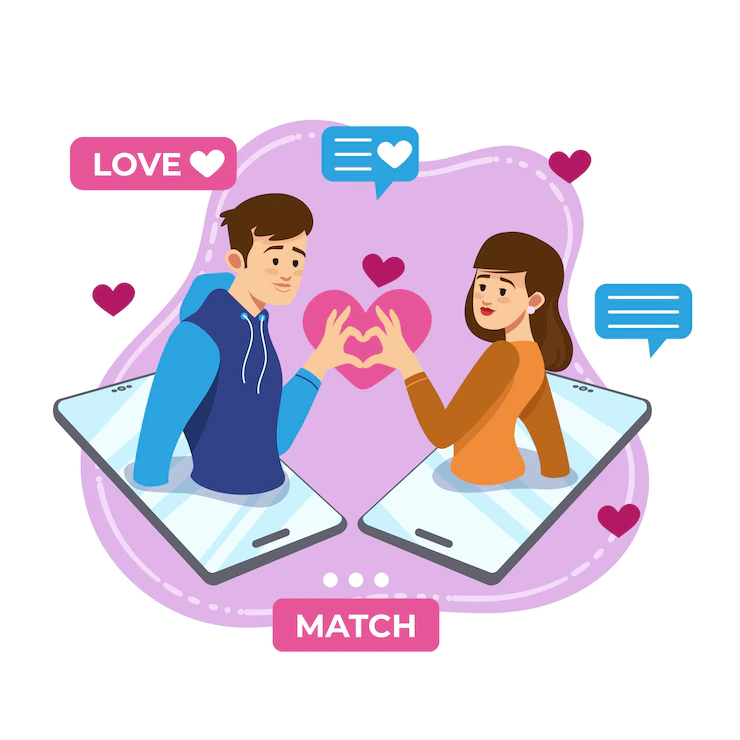

Love Match Dating is a new and innovative dating service that uses advanced algorithms to connect
compatible individuals based on their personality traits, interests, and values. Say goodbye to
endless swiping and hello to a personalized dating experience that truly understands what you're
looking for. Sign up now and let Love Match Dating help you find your soulmate.
The key to a successful first date is to relax, be yourself, and keep the conversation flowing.
When meeting for the first time, it's a good idea to suggest a casual and comfortable setting, such as a coffee shop or a park. This will make it easier for both of you to relax and have a good time.
During the date, be sure to ask open-ended questions to get to know the other person better.
Online dating is a way for people to meet and connect with potential romantic partners through the internet. It has become increasingly popular in recent years, as technology has advanced and more and more people have access to the internet.
There are many different online dating platforms available, each with its own unique features and target audience.